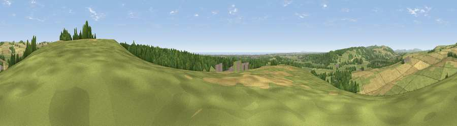

Viewpoint near Wepham
#6845 in England · top 23% of its area beats it · near WephamWhere it is
The exact computed spot (TQ 05050 08925). Click the marker for map links.
The view, rendered

A 360° render of this exact spot computed from the terrain model, tree cover and land cover — summer colours, afternoon light, calibrated against photographs of famous viewpoints. Real trees, hedges and buildings will differ in detail.
The panorama
Grey silhouette: terrain skyline in each direction (720 bearings, Earth curvature and refraction included). Dashed green: skyline with trees (+15 m) and buildings (+8 m) as obstacles. Blue strip: how far the ground is visible on each bearing.
Where the view opens
Wedge length = distance to the farthest visible ground on that bearing (vegetation-aware). Rings at 10, 25 and 50 km.
What fills the view
42% grassland · 30% cropland · 22% woodland · 4% water · 2% built-up
Angular shares of the visible panorama (visual magnitude), not map area. Landscape diversity 0.55 (0–1 Shannon).
Key numbers
More beautiful places nearby
The staircase of upgrades: each row has a higher view potential than everything closer. Driving times are estimates from straight-line distance, calibrated against real road routing — check an actual route before setting out.
| Place | Direction | Drive | Score |
|---|---|---|---|
| Harrow Hill | ENE · 3 km | ~8 min | 74.0 |
| Viewpoint near Amberley | N · 4 km | ~9 min | 82.3 |
| Viewpoint near Storrington | NE · 5 km | ~10 min | 83.9 |
| Westburton Hill | NW · 7 km | ~14 min | 84.2 |
| Bignor Hill | WNW · 8 km | ~16 min | 84.4 |
| Viewpoint near Washington | ENE · 9 km | ~18 min | 85.0 |
| Chanctonbury Ring | ENE · 9 km | ~18 min | 87.0 |
| Firle Beacon | E · 44 km | ~64 min | 88.9 |
50.87029, -0.50845 · source: screening · position refined by local search. Computed location — check access rights before visiting.